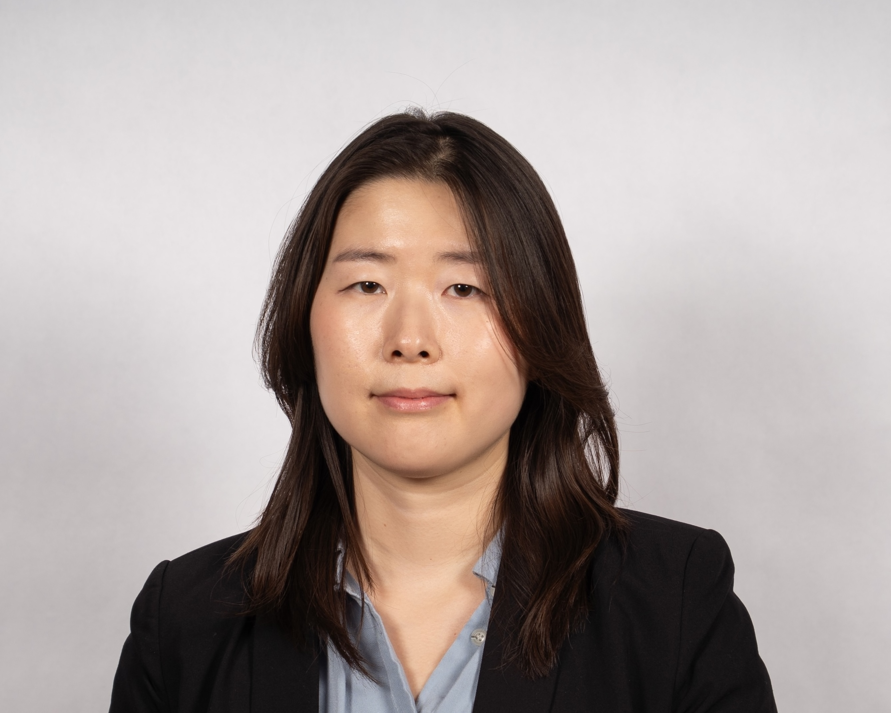
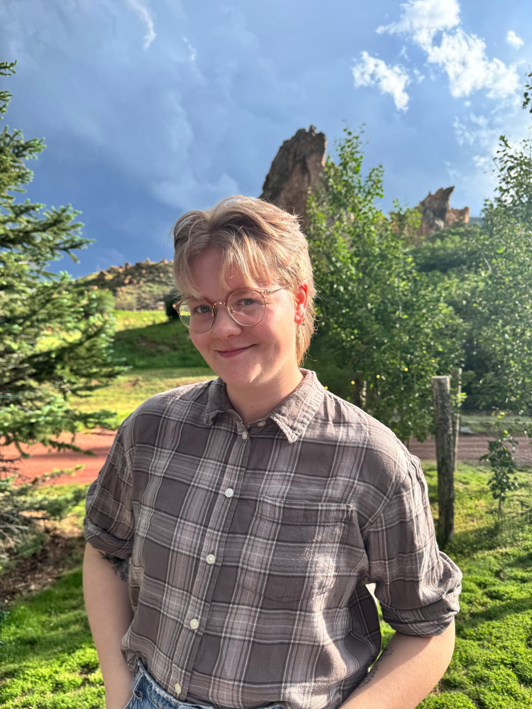

Principal Investigator
Michael A. Farrar, PhD
Virginia and David C. Utz Land Grant Chair in Fundamental Immunobiology
Center for Immunology (CFI), Deparment of Laboratory Medicine and Pathology
Senior Scientists

Lynn Heltemes Harris, PhD
Senior Research Scientist
Dept. Laboratory Medicine and Pathology
Sean Tracy, MD, PhD
Assistant Professor
Devision of Hematology, Oncology, and Transplantation
Graduate Students

Sookyong Joo
PhD Student
Microbiology, Immunology, and Cancer Biology (MICaB) program

Thomas Hougard
MSTP Student
Microbiology, Immunology, and Cancer Biology (MICaB) program

Enoc Granados Centeno
PhD Student
Microbiology, Immunology, and Cancer Biology (MICaB) program

Lexi Luo
MSTP Student
Microbiology, Immunology, and Cancer Biology (MICaB) program

Victor Yu
MSTP Student
Microbiology, Immunology, and Cancer Biology (MICaB) program
Staff
Grey Hubbard
Researcher

Kyra Boorsma Bergerud
Researcher
Alumni
Graduate Students
| Name | Year | Current Position |
|---|---|---|
| Hrishi Venkatesh, PhD | 2024 | Postdoctoral Researcher, Fred Hutch Cancer Center |
| Natalie David, MD/PhD | 2023 | Resident Physician, Cincinnati Children's Hospital |
| Lucy Sjaastad, PhD | 2022 | Clinical Development Scientist, Philips |
| Robin Lee, MD/PhD | 2022 | PSTP Fellowship |
| David Owen, PhD | 2021 | Postdoctoral Researcher, Harvard Medical School |
| Luke Manlove, PhD | 2015 | Federal Bureau of Investigation |
| Casey Katerndahl, PhD | 2015 | Assistant Professor, University of Indiana Medical School |
| Shawn Mahmud, MD, PhD | 2013 | Assistant Professor, Dept. of Pediatrics, University of Minnesota |
| Bao Vang, PhD | 2010 | Oncology | Phase 1-3 Clinical Trials | Pharmacovigilance | On assignment at Merck |
| Mark Willette, PhD | 2010 | |
| Laura Ramsey, PhD | 2009 | Section Chief for Individualized Therapeutics, Children's Mercy Hospital, Kansas City |
| Linxi Li, PhD | 2009 | Associate Professor, Dept. of Microbiology and Immunology, University of Arkansas-Little Rock |
| Jianying Yang, MD, PhD | 2009 | Internal Medicine, Mass General Brigham-Newton Wellesley Hospital |
| Matt Burchill, PhD | 2007 | Associate Professor, University of Colorado-Anschutz |
| Christine Goetz, PhD | 2005 | Senior Scientist, Miromatrix |
Postdoctoral Fellows
| Name | Year | Current Position |
|---|---|---|
| Sean Tracy, MD, PhD | 2019-2022 | Asst. Professor, Dept. of Medicine, University of Minnesota |
| Can Hekim, PhD | 2017-2019 | Senior Research Scientist, Orion Corporation |
| Katherine Berquam-Vrieze, PhD | 2011-2014 | Senior Associate Director, Boehringer Ingelheim |
| Lynn Heltemes-Harris, PhD | Senior Research Associate, University of Minnesota |
Join the Lab
We are always looking for motivated students and researchers to join the team. If you are interested in our work, please reach out to Dr. Farrar at farra005@umn.edu with your CV and a brief description of your research interests.